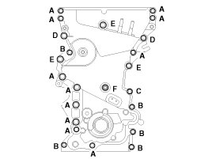

Timing Cover: Specifications
Timing chain cover. The dowel pins on the cylinder block and holes on the timing chain cover should be used as a reference in order to assemble the timing chain cover in exact position.
Tightening torque
Bolts (A, B): 18.6 - 23.5 N.m (1.9 - 2.4 kgf.m, 13.7 - 17.4 lb-ft)
Bolt (C): 19.6 - 23.5 N.m (2.0 - 2.4 kgf.m, 14.5 - 17.4 lb-ft)
Bolts (D,E): 39.2 - 49.0 N.m (4.0 - 5.0 kgf.m, 28.9 - 36.2 lb-ft)
Bolt (F): 9.8 - 11.8 N.m (1.0 - 1.2 kgf.m, 7.2 - 8.7 lb-ft)

CAUTION: Do not reuse the seal bolts (C,F).
CAUTION: The engine running or pressure test should not be performed within 30 minutes after the timing chain cover was assembled.